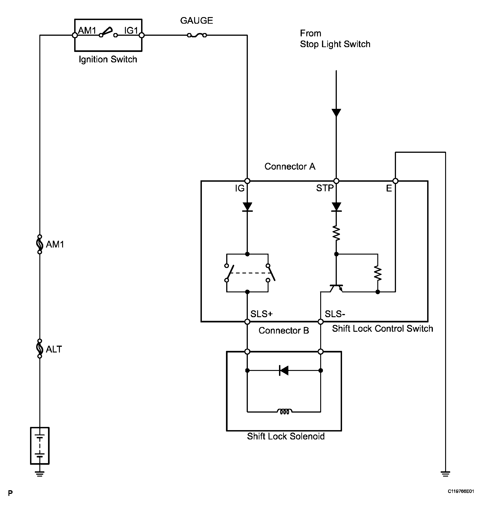

System Diagram
WARNING: This page is about a different variant/trim than selected.

Courtesy of © TOYOTA, LICENSE AGREEMENT TMS1002
HINT:
The shift lock control switch turns ON when the shift lever is in the P position, and turns OFF when the shift lever is not in the P position.